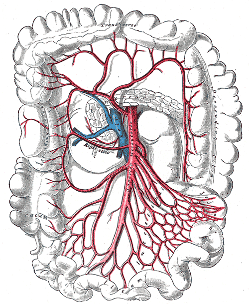
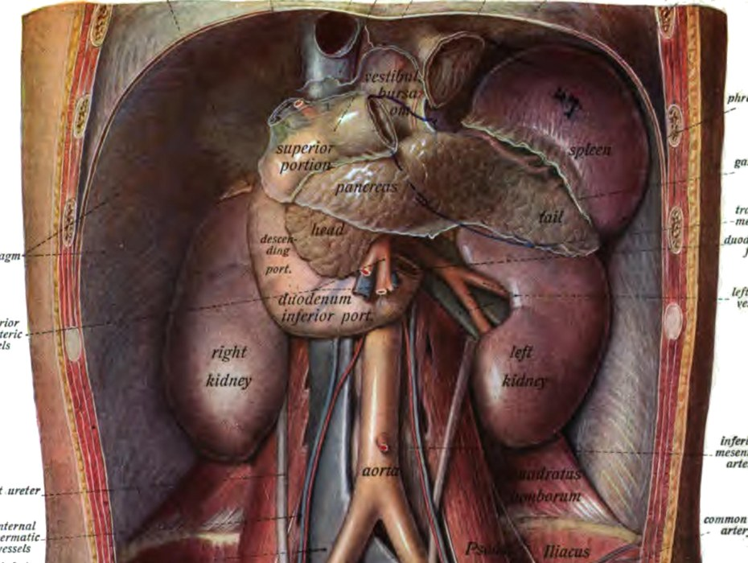
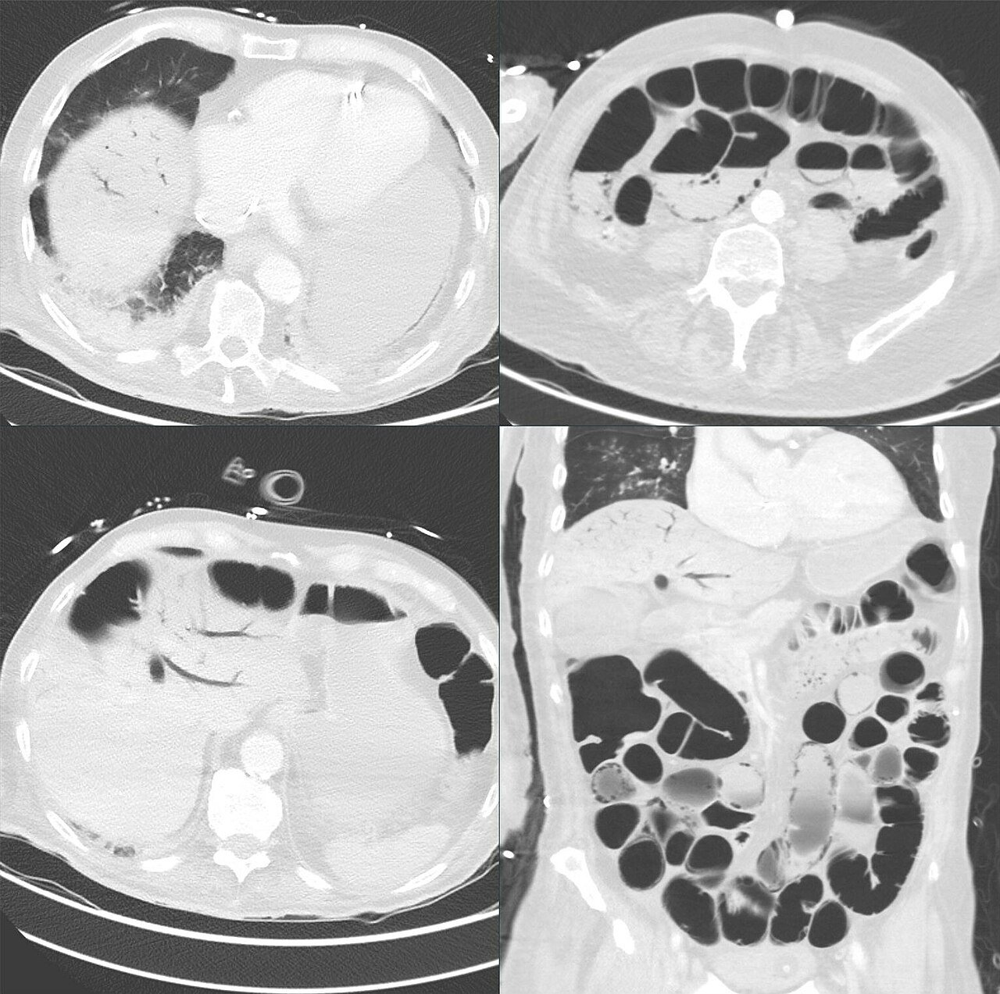
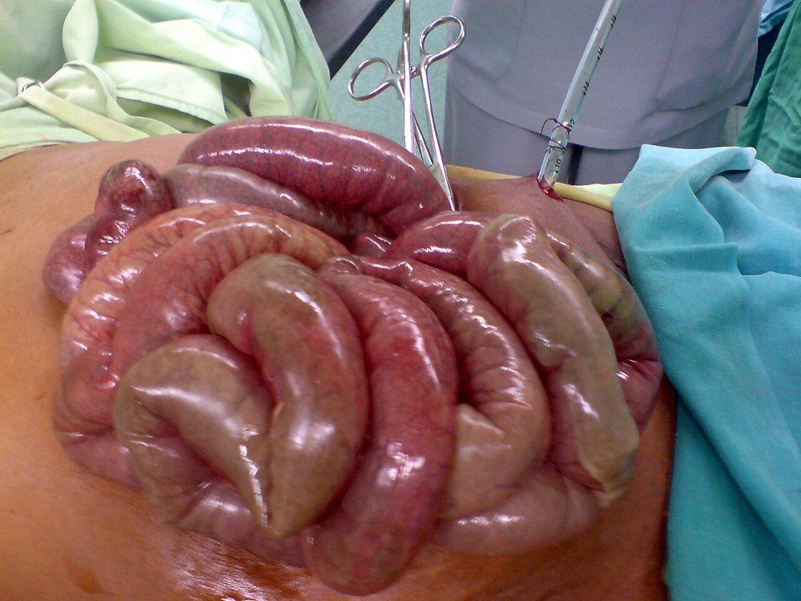

איסכמיה של המעי
איסכמיה מזנטרית חריפה וכרונית ופקקת ורידים מזנטריים: מי בסיכון, איך מזהים מוקדם ומה עושים בשעות הראשונות
בסוף המפגש תדעו
- לתאר את אספקת הדם למעי ואת מעגלי הדם העוקפים
- להבדיל בין ארבעת הסוגים: תסחיף, פקקת עורקית, איסכמיה לא חסימתית ופקקת ורידית
- לחשוד באיסכמיה חריפה כשהכאב לא תואם את הבדיקה ולהזמין CTA בלי עיכוב
- להכיר את עקרונות הטיפול: החייאה, הפרין, החזרת זרימה ובדיקת המעי
- לזהות איסכמיה כרונית (״פחד מאוכל״ וירידה במשקל) ולהכיר את הטיפול בה
העורק המזנטרי העליון וענפיו

👆 לחצו על אזור בציור כדי לקרוא עליו
הענף השני של אבי העורקים, אחרי הגזע הצליאקי. יוצא בזווית חדה כלפי מטה. לכן תסחיפים נכנסים אליו בקלות. בכ-15% התסחיף נתקע ממש במוצא. פקקת על רקע טרשת נוצרת לרוב עד 2 ס״מ מהמוצא: נפגע קטע ארוך של מעי והתמותה גבוהה יותר
מספק את המעי הגס הרוחבי ומתחבר לעורקים הקוליים הימני והשמאלי (העורק השולי של דרומונד). כ-50% מהתסחיפים נתקעים מעט אחרי יציאתו: לכן בתסחיף הג׳ג׳ונום הקרוב והמעי הגס הרוחבי נחסכים לרוב. קשת ריולן מחברת אותו לעורק הקוליקי השמאלי (מה-IMA)
למעי הגס העולה. חלק מרשת העורקים שמספקת את חצי המעי הגס הימני מה-SMA
לאילאום הסופי, לצקום ולתוספתן. בפקקת ורידית (MVT) נפגעים בעיקר האילאום והג׳ג׳ונום. התריסריון והמעי הגס נחסכים יחסית
קשת אחת או שתיים עם כלים ישרים ארוכים. ה-SMA מצטמצם אחרי הענפים הראשונים לג׳ג׳ונום. לכן תסחיפים נעצרים לרוב קרוב למוצא
ארבע או חמש קשתות עם כלים ישרים קצרים. אזור רחוק מהמוצא: בחסימה קרובה כל המעי הזה בסכנה
שלושה עורקים ורשת עוקפת
- שלושה עורקים: הגזע הצליאקי, SMA ו-IMA. מוצא הצליאק וה-SMA בגובה T12–L1
- מעגלים עוקפים: קשת ביולר (הקשת הפנקריאטיקו-דואודנלית) והעורק הגסטרו-דואודנלי בין הצליאק ל-SMA. קשת ריולן בין ה-SMA ל-IMA. העורק השולי של דרומונד
- בזכות הרשת הזו, חסימה של עורק אחד לרוב שקטה. תסחיף לצליאק לבד גורם לתסמינים בעיקר כשה-SMA כבר חולה
- ה-SMA יוצא סמוך לגבול התחתון של הלבלב ועובר מלפני החלק השלישי של התריסריון

ארבע דרכים להרעיב את המעי
נדירה, קטלנית ותלויה בזמן
- גורמי סיכון: טרשת עורקים, פרפור פרוזדורים, אוטם טרי, אי-ספיקת לב, איסכמיה כרונית ידועה
- ל-NOMI: חולים קשים בהלם, אחרי ניתוחי לב ובדיאליזה
כאב שלא תואם את הבדיקה
- תסחיף: התחלה פתאומית והידרדרות מהירה (אין מעגלים עוקפים)
- פקקת: התחלה הדרגתית, לעיתים ימים עד שבועות. לפעמים איסכמיה חריפה על כרונית
- NOMI: בטיפול נמרץ, עם כשל איברים. יכול להיות בלי כאב: תפיחות, אלח דם וממצאי מעבדה
- אבחנה מבדלת: תוספתן, דיברטיקוליטיס, כיס מרה, לבלב, חסימת מעי

מעבדה עוזרת, CTA מאבחן
מעבדה: תומכת, לא מאבחנת ולא שוללת
- יכולה להיות תקינה בהתחלה. לויקוציטוזיס מעל 15,000, חמצת מטבולית ולקטט גבוה
- D-dimer רגיש ומוקדם, אבל לא סגולי. עמילאז, CK ואנזימי כבד לא מספיקים
הדמיה

החייאה וחזרת זרימה, במקביל
מיד עם האבחנה
- עירוי, נוזלים קריסטלואידים, ניטור המודינמי ותיקון אלקטרוליטים
- הפרין סיסטמי מיד, כדי שהקריש לא יתפשט
- אנטיביוטיקה רחבה לווריד: מעבר חיידקים דרך מעי איסכמי
- להימנע מוזופרסורים. אם חייבים: דובוטמין, מילרינון או דופמין במינון נמוך, שמכווצים פחות את כלי המעי
- כל זה לא מעכב את החזרת הזרימה
להציל כמה שיותר מעי
- קודם זרימה, אחר כך כריתה: אחרי החזרת הדם בודקים את כל המעי
- מעי נמק ברור: כורתים ומשאירים את הקצוות סגורים, בלי השקה
- מעי ספק חי: לא כורתים באגרסיביות. סגירה זמנית של הבטן ומבט שני אחרי 24–36 שעות, כשלמעי היה זמן להתאושש
- אחרי טיפול אנדווסקולרי: אפשר לבדוק את המעי בלפרוסקופיה
- קריש שנשאר רחוק: אפשר להזליף 0.5–1 mg tPA לעורק

הקריש בצד הוורידי
- לרוב ב-SMV. ב-IMV רק 5–10%. נפגעים בעיקר האילאום והג׳ג׳ונום
- מצב קרישיות יתר מזוהה ב-60–70% ומנבא איסכמיה
- חריפה (כ-70%): כאב שלא תואם את הבדיקה, בחילות והקאות. דימום ממערכת העיכול ב-15–50%
- תת-חריפה: תסמינים לא ספציפיים שבועות עד חודשים. כרונית: לרוב שקטה, מתגלה עם סיבוכי יתר לחץ פורטלי
- האבחנה: CT עם חומר ניגוד בשלב עורקי ובשלב ורידי פורטלי. גם בירור קרישיות וסקר סרטן לפי הגיל
״אנגינה של המעי״
- התסמינים: כאב אחרי אוכל, פחד מאוכל וירידה לא מכוונת במשקל. גם בחילות, הקאות ושלשול
- מי מפתח תסמינים: טרשת מפושטת, היצרות מעל 70% או חסימה של שני עורקים לפחות
- בבדיקה: לרוב לא ספציפית. בדיקת כלי דם מלאה, כולל דפקים בגפיים
- חובה לשלול גידול: כל חולה עם כאב בטן וירידה במשקל עובר בירור מהיר לממאירות
סטנט קודם, ניתוח כשצריך
- למה לטפל: להעלים תסמינים, למנוע איסכמיה חריפה ולשפר איכות חיים. ללא תסמינים: מעקב שנתי בדופלר והחלטה משותפת
- המטרה העיקרית: ה-SMA. הצליאק וה-IMA הם מטרות משניות
- טיפול תרופתי לכולם: נוגדי טסיות, הורדת שומנים, חוסמי בטא והפסקת עישון
- תזונה תוך-ורידית אינה תחליף לטיפול. מותרת רק סביב הניתוח
- אחרי סטנט: לרוב שני נוגדי טסיות 6–12 שבועות. מעקב הדמיה אחרי חודש, כל חצי שנה בשנתיים הראשונות ואחר כך כל שנה
מחקרים והנחיות שכדאי להכיר
העדכון הראשון מאז 2017: 102 המלצות על איסכמיה כרונית, איסכמיה עורקית חריפה, NOMI, פקקת ורידית, מפרצות ודיסקציות של עורקי הבטן
Koelemay MJ et al. Eur J Vasc Endovasc Surg 2025;70:153-218418 חולים. מהתחלת התסמינים לאשפוז: חציון 24 שעות. מהאשפוז לאבחנה: 6 שעות. עורקית חסימתית 55.3%, NOMI 13.2% וורידית 17.5%. תמותה בבית החולים 49%: הכי נמוכה בוורידית (13.7%), הכי גבוהה ב-NOMI (72.7%)
Reintam Blaser A et al. Crit Care 2024;28:32158 חולים. התמותה: 2.9% כשהטיפול האנדווסקולרי הצליח, 41.2% כשלא הספיק לבד, 45.8% בניתוח. אחרי תיקון לחומרת המחלה, השיטה לא השפיעה על התמותה: היתרון נובע מבחירת החולים
Kase K et al. World J Emerg Surg 2025;20:46133 חולים קשים עם איסכמיה עורקית, בגישה רב-תחומית שמטרתה להציל חיים ומעי. 78.9% עברו החזרת זרימה. תמותה 33.1% ב-28 יום ו-46.6% בשנה. רק 18.3% מהשורדים נזקקו לתזונה תוך-ורידית אחרי שנה
Tran-Dinh A et al. Anaesth Crit Care Pain Med 2026;45:101650חמישה דברים לקחת למחלקה
- כאב חזק עם בטן רכה בחולה עם פרפור פרוזדורים או טרשת: איסכמיה עד שהוכח אחרת
- מעבדה תקינה לא שוללת. CTA דו-שלבי הוא הבדיקה, בלי לחכות
- מיד: נוזלים, הפרין, אנטיביוטיקה. בלי וזופרסורים אם אפשר
- קודם זרימה, אחר כך כריתה. מעי בספק: מבט שני
- כאב אחרי אוכל, פחד מאוכל וירידה במשקל: לחשוב על איסכמיה כרונית ולשלול גידול